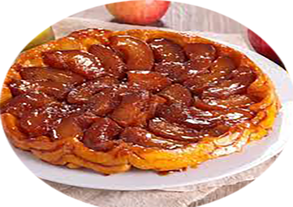

Tarte tatin

Pour 8 personnes
Préparation : 35 mn
Cuisson : 20 mn
Ingrédients
- 1 pâte brisée
- 5 pommes
- 150 gr de sucre
- 100 gr de beurre
- Cannelle
Recette
- Prenez les pommes, épluchez-les et coupez-les en quatre puis recoupez les quarts de pommes en deux.
- Pour le caramel, faites chauffer dans une casserole le beurre et ajoutez progressivement le sucre. Mélangez jusqu'à l'obtention d'un caramel de couleur marron (faites attention à ce qu'il ne soit pas amer).
- Dès que le caramel est prêt, versez-le dans un plat à tarte et rapidement venez disposer les pommes dans le moule (en formant une rosace) en prenant soin de bien les serrer entre elles.
- Mettez ensuite le plat à tarte sur le feu et laissez cuire les pommes 10 minutes pour que le caramel s'imprègne bien. (Vous pouvez rajouter la cannelle à ce moment-là)
- Pendant ce temps, abaissez la pâte feuilletée sur une surface légèrement farinée pour qu'elle soit un peu plus grande que le moule.
- Une fois le temps de cuisson fini, prenez la pâte brisée que vous avez préalablement étalée et recouvrez les pommes avec la pâte, rentrez les bords à l'intérieur.
- Mettez au four 20 / 25 minutes à 180 degrés (du moins jusqu'à que la pâte soit cuite).
- Retirez la tarte du four et laissez-la refroidir pendant quelques minutes.
- Placez un plat de service sur le dessus de la poêle et retournez délicatement la tarte Tatin sur le plat, de manière à ce que les pommes caramélisées soient sur le dessus.
- Servez la tarte Tatin tiède (ou non), éventuellement accompagnée d'une boule de glace à la vanille.
|